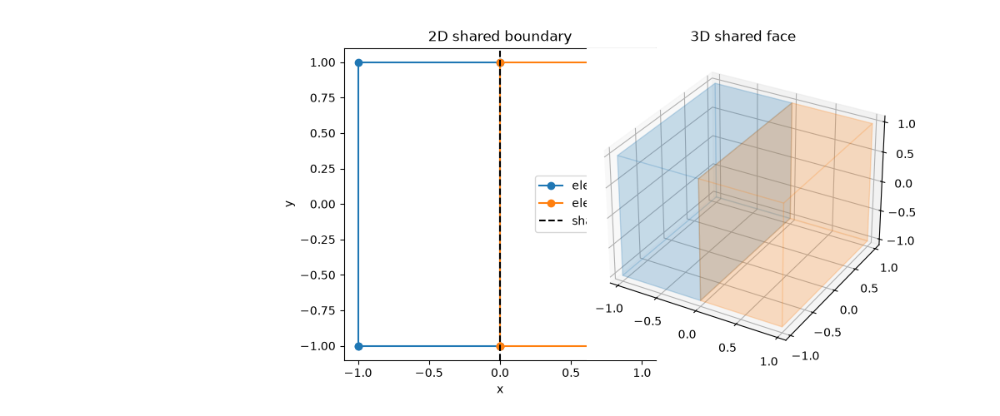

Note
Go to the end to download the full example code.
Boundary Trace Mass Matrices#
Each row of a boundary mass matrix is a trace inner product,
where \(v_i\) are the windowed common Legendre test functions of the shared face: the per-axis minimum order of the incident elements, reduced by two on every axis that carries no covector of the k-form component. The columns pair with the element’s trace degrees of freedom, so one matrix collects the boundary geometry and metric factors of one element trace in a single per-object operator.
compute_kform_boundary_mass_matrices() assembles one matrix per
incident element of a shared boundary object in a single call and returns the
rows in a packed CSR-like representation. This example assembles the shared
edge of two quadrilaterals and the shared face of two hexahedra for every
k-form order living on that face, prints the packed row data, and verifies
that both incident elements pair a constant trace with the same values.
The printed checks run before the figures are created, and the boundary geometry of both setups is plotted afterwards.

2D shared edge (boundary dimension 1)
k=0 element k-form:
common test space: k=0, rows=2, trace DoFs per element=16
element 0: shape=(2, 16), nnz=8, packed_entries=32
offsets=[0, 16, 32]
first components=[0, 0, 0, 0, 0, 0, 0, 0]
first local DoFs=[12, 13, 14, 15, 12, 13, 14, 15]
first coefficients=[ 0.25 0.75 0.75 0.25 -0.18333333 -0.45
0.45 0.18333333]
element 1: shape=(2, 16), nnz=8, packed_entries=32
offsets=[0, 16, 32]
first components=[0, 0, 0, 0, 0, 0, 0, 0]
first local DoFs=[0, 1, 2, 3, 0, 1, 2, 3]
first coefficients=[ 0.25 0.75 0.75 0.25 -0.18333333 -0.45
0.45 0.18333333]
constant trace pairing residual = 0.000e+00
k=1 element k-form:
common test space: k=1, rows=3, trace DoFs per element=12
element 0: shape=(3, 12), nnz=9, packed_entries=36
offsets=[0, 12, 24, 36]
first components=[1, 1, 1, 1, 1, 1, 1, 1]
first local DoFs=[9, 10, 11, 9, 10, 11, 9, 10]
first coefficients=[ 3.33333333e-01 1.33333333e+00 3.33333333e-01 -3.33333333e-01
-1.38777878e-17 3.33333333e-01 1.33333333e-01 -2.66666667e-01]
element 1: shape=(3, 12), nnz=9, packed_entries=36
offsets=[0, 12, 24, 36]
first components=[1, 1, 1, 1, 1, 1, 1, 1]
first local DoFs=[0, 1, 2, 0, 1, 2, 0, 1]
first coefficients=[ 3.33333333e-01 1.33333333e+00 3.33333333e-01 -3.33333333e-01
-1.38777878e-17 3.33333333e-01 1.33333333e-01 -2.66666667e-01]
3D shared face (boundary dimension 2)
k=0 element k-form:
common test space: k=0, rows=4, trace DoFs per element=64
element 0: shape=(4, 64), nnz=64, packed_entries=256
offsets=[0, 64, 128, 192, 256]
first components=[0, 0, 0, 0, 0, 0, 0, 0]
first local DoFs=[48, 49, 50, 51, 52, 53, 54, 55]
first coefficients=[0.0625 0.1875 0.1875 0.0625 0.1875 0.5625 0.5625 0.1875]
element 1: shape=(4, 64), nnz=64, packed_entries=256
offsets=[0, 64, 128, 192, 256]
first components=[0, 0, 0, 0, 0, 0, 0, 0]
first local DoFs=[0, 1, 2, 3, 4, 5, 6, 7]
first coefficients=[0.0625 0.1875 0.1875 0.0625 0.1875 0.5625 0.5625 0.1875]
constant trace pairing residual = 0.000e+00
k=1 element k-form:
common test space: k=1, rows=12, trace DoFs per element=96
element 0: shape=(12, 96), nnz=142, packed_entries=576
offsets=[0, 48, 96, 144, 192, 240, 288, 336, 384, 432, 480, 528, 576]
first components=[1, 1, 1, 1, 1, 1, 1, 1]
first local DoFs=[36, 37, 38, 39, 40, 41, 42, 43]
first coefficients=[0.08333333 0.25 0.25 0.08333333 0.33333333 1.
1. 0.33333333]
element 1: shape=(12, 96), nnz=142, packed_entries=576
offsets=[0, 48, 96, 144, 192, 240, 288, 336, 384, 432, 480, 528, 576]
first components=[1, 1, 1, 1, 1, 1, 1, 1]
first local DoFs=[0, 1, 2, 3, 4, 5, 6, 7]
first coefficients=[0.08333333 0.25 0.25 0.08333333 0.33333333 1.
1. 0.33333333]
k=2 element k-form:
common test space: k=2, rows=9, trace DoFs per element=36
element 0: shape=(9, 36), nnz=79, packed_entries=324
offsets=[0, 36, 72, 108, 144, 180, 216, 252, 288, 324]
first components=[2, 2, 2, 2, 2, 2, 2, 2]
first local DoFs=[27, 28, 29, 30, 31, 32, 33, 34]
first coefficients=[0.11111111 0.44444444 0.11111111 0.44444444 1.77777778 0.44444444
0.11111111 0.44444444]
element 1: shape=(9, 36), nnz=79, packed_entries=324
offsets=[0, 36, 72, 108, 144, 180, 216, 252, 288, 324]
first components=[2, 2, 2, 2, 2, 2, 2, 2]
first local DoFs=[0, 1, 2, 3, 4, 5, 6, 7]
first coefficients=[0.11111111 0.44444444 0.11111111 0.44444444 1.77777778 0.44444444
0.11111111 0.44444444]
from __future__ import annotations
from collections.abc import Sequence
import matplotlib.pyplot as plt
import numpy as np
from fdg import (
BasisSpecs,
BasisType,
CoordinateMap,
DegreesOfFreedom,
FunctionSpace,
IntegrationSpace,
IntegrationSpecs,
KFormSpecs,
SpaceMap,
compute_kform_boundary_mass_matrices,
)
from mpl_toolkits.mplot3d.art3d import Poly3DCollection
#: Element k-form order. The windowed common test space reduces the per-axis
#: order by two on axes that carry no component covector, so the order is
#: chosen high enough to leave visible rows on the shared face.
ELEMENT_ORDER = 3
def make_element_basis(ndim: int) -> FunctionSpace:
"""Make the uniform element k-form basis of the demo order."""
return FunctionSpace(
*(BasisSpecs(BasisType.LAGRANGE_UNIFORM, ELEMENT_ORDER) for _ in range(ndim))
)
def make_2d_maps() -> tuple[list[SpaceMap], FunctionSpace]:
"""Make two translated affine quadrilateral maps."""
basis = FunctionSpace(
BasisSpecs(BasisType.LAGRANGE_UNIFORM, 1),
BasisSpecs(BasisType.LAGRANGE_UNIFORM, 1),
)
integration = IntegrationSpace(IntegrationSpecs(3), IntegrationSpecs(3))
y_values = [-1, 1, -1, 1]
maps = [
SpaceMap(
CoordinateMap(DegreesOfFreedom(basis, x_values), integration),
CoordinateMap(DegreesOfFreedom(basis, y_values), integration),
)
for x_values in ([-1, -1, 0, 0], [0, 0, 1, 1])
]
return maps, basis
def make_3d_maps() -> tuple[
list[SpaceMap], FunctionSpace, tuple[tuple[list[float], ...], ...]
]:
"""Make two translated affine hexahedral maps."""
basis = FunctionSpace(*(BasisSpecs(BasisType.LAGRANGE_UNIFORM, 1) for _ in range(3)))
integration = IntegrationSpace(*(IntegrationSpecs(3) for _ in range(3)))
x_values_0 = [-1, -1, 1, 1, -1, -1, 1, 1]
y_values_0 = [-1, 1, -1, 1, -1, 1, -1, 1]
z_values = [-1, -1, -1, -1, 1, 1, 1, 1]
coordinate_values = (
([value + 1 for value in x_values_0], y_values_0, z_values),
([value + 1 for value in y_values_0], x_values_0, z_values),
)
maps = [
SpaceMap(
*(
CoordinateMap(DegreesOfFreedom(basis, values), integration)
for values in values_set
)
)
for values_set in coordinate_values
]
return maps, basis, coordinate_values # type: ignore[return-value]
def boundary_mass_matrices(
order: int,
basis: FunctionSpace,
maps: list[SpaceMap],
orientations: tuple[Sequence[int], Sequence[int]],
boundary_dimension: int,
) -> list[np.ndarray]:
"""Assemble and print one shared-boundary mass matrix per incident element.
The rows of every matrix are the windowed common Legendre test space of
the shared face; the columns are the trace degrees of freedom of the
element k-form. The orientation records fix the shared face inside each
element: the first entry is the signed one-based fixed axis, the
remaining entries list the tangential axes.
"""
specs = [KFormSpecs(order, basis) for _ in maps]
common_specs, _common_integration, matrices, packed = (
compute_kform_boundary_mass_matrices(
specs,
orientations,
[element_map.integration_space for element_map in maps],
boundary_dimension=boundary_dimension,
packed=True,
)
)
print(
f" common test space: k={common_specs.order}, "
f"rows={matrices[0].shape[0]}, trace DoFs per element={matrices[0].shape[1]}"
)
for element_id, (matrix, rows) in enumerate(zip(matrices, packed, strict=True)):
row_offsets, _sides, components, local_dofs, coefficients = rows
print(
f" element {element_id}: shape={matrix.shape}, "
f"nnz={int(np.count_nonzero(matrix))}, packed_entries={coefficients.size}"
)
print(f" offsets={row_offsets.tolist()}")
support = np.nonzero(coefficients)[0]
print(f" first components={components[support][:8].tolist()}")
print(f" first local DoFs={local_dofs[support][:8].tolist()}")
print(f" first coefficients={coefficients[support][:8]}")
return matrices
def report_2d() -> None:
"""Assemble the shared-edge boundary mass matrices of two quadrilaterals."""
maps, _ = make_2d_maps()
basis = make_element_basis(2)
print("2D shared edge (boundary dimension 1)")
for order in range(2):
print(f" k={order} element k-form:")
matrices = boundary_mass_matrices(order, basis, maps, ((1, 2), (-1, 2)), 1)
if order == 0:
ones = [np.ones(matrix.shape[1]) for matrix in matrices]
residual = np.max(np.abs(matrices[0] @ ones[0] - matrices[1] @ ones[1]))
print(f" constant trace pairing residual = {residual:.3e}")
def report_3d() -> None:
"""Assemble the shared-face boundary mass matrices of two hexahedra."""
maps, _, _ = make_3d_maps()
basis = make_element_basis(3)
print("3D shared face (boundary dimension 2)")
for order in range(3):
print(f" k={order} element k-form:")
matrices = boundary_mass_matrices(order, basis, maps, ((1, 2, 3), (-1, 2, 3)), 2)
if order == 0:
ones = [np.ones(matrix.shape[1]) for matrix in matrices]
residual = np.max(np.abs(matrices[0] @ ones[0] - matrices[1] @ ones[1]))
print(f" constant trace pairing residual = {residual:.3e}")
def plot_geometry() -> None:
"""Plot the adjacent 2D quadrilaterals and 3D hexahedra."""
fig, ax_2d = plt.subplots(figsize=(12, 5))
ax_2d.plot([-1, 0, 0, -1, -1], [-1, -1, 1, 1, -1], "o-", label="element A")
ax_2d.plot([0, 1, 1, 0, 0], [-1, -1, 1, 1, -1], "o-", label="element B")
ax_2d.axvline(0, color="black", linestyle="--", label="shared edge")
ax_2d.set(aspect="equal", title="2D shared boundary", xlabel="x", ylabel="y")
ax_2d.legend()
ax_3d = fig.add_subplot(1, 2, 2, projection="3d")
for x0, x1, color in ((-1, 0, "tab:blue"), (0, 1, "tab:orange")):
vertices = np.array(
[
[x0, -1, -1],
[x1, -1, -1],
[x1, 1, -1],
[x0, 1, -1],
[x0, -1, 1],
[x1, -1, 1],
[x1, 1, 1],
[x0, 1, 1],
]
)
faces = [
vertices[list(index)]
for index in (
(0, 1, 2, 3),
(4, 5, 6, 7),
(0, 1, 5, 4),
(3, 2, 6, 7),
(0, 3, 7, 4),
(1, 2, 6, 5),
)
]
ax_3d.add_collection3d(
Poly3DCollection(faces, alpha=0.12, facecolor=color, edgecolor=color)
)
ax_3d.set(
xlim=(-1.1, 1.1), ylim=(-1.1, 1.1), zlim=(-1.1, 1.1), title="3D shared face"
)
fig.tight_layout()
plt.show()
report_2d()
report_3d()
plot_geometry()
Total running time of the script: (0 minutes 0.122 seconds)